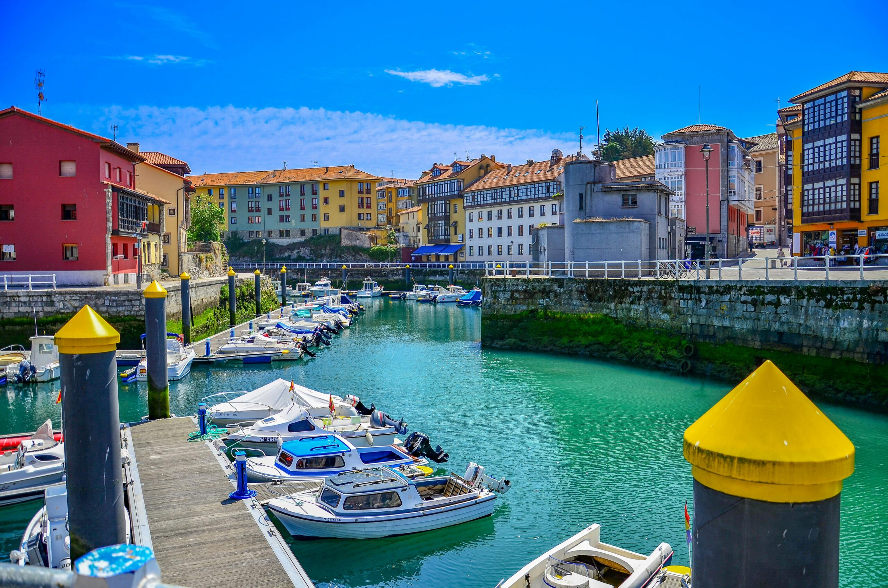

El primer hotel de Nueva de Llanes
Hotel
Hotel
Cuevas del Mar
Donde el azul de las ventanas se funde con el azul del Cantábrico
Scroll
Donde el azul de las ventanas se funde con el azul del Cantábrico

El Hotel Cuevas del Mar es el primer establecimiento hotelero que abrió sus puertas en Nueva de Llanes, un pueblo marinero del Oriente Asturiano. En la Plaza Laverde Ruiz, testigo de décadas de historia local, el hotel ha acogido a generaciones de viajeros que buscaban la auténtica Costa Cantábrica.
Las 11 habitaciones con suelo de madera histórico, vigas a la vista y ventanas azules con vistas al pueblo, y los 3 apartamentos para mayor independencia, mantienen el carácter auténtico del edificio. El desayuno incluido y el aparcamiento privado hacen del Cuevas del Mar el punto de partida perfecto.
Nueva de Llanes tiene identidad propia, y el Hotel Cuevas del Mar forma parte de ella. Un artista local plasmó la fachada en una pintura al óleo. Un dibujo a tinta recuerda el edificio en sus primeros años. Una fotografía de época con una vecina en traje tradicional de aldeana asturiana nos recuerda que este lugar lleva décadas en el corazón del pueblo.


Suelos de madera histórica, vigas a la vista, paredes azules y vistas al pueblo. Cada habitación tiene su propio carácter.
Doble superior Vistas y balcón
Vistas y balcón Matrimonio
Matrimonio Abuhardillada
Abuhardillada Doble dos camas
Doble dos camas Baño privado
Baño privado Matrimonio superior
Matrimonio superior Desayuno incluido
Desayuno incluidoNuestra cafetería es el corazón del hotel. Un espacio abierto donde los días comienzan bien y donde clientes y vecinos de Nueva de Llanes se sientan a la misma mesa. Abierta también al público en general.


En pleno centro de Nueva de Llanes, aparcar siempre es una ventaja. Nuestro aparcamiento privado está incluido en la estancia sin ningún coste adicional. Llega, aparca tranquilo y empieza a disfrutar Asturias desde el primer momento.
El Oriente Asturiano es tierra de acantilados, playas salvajes y pueblos con siglos de historia. Desde el hotel, todo está a mano.

A 5 min a pie · Playa
La playa que da nombre al hotel. Cuevas marinas excavadas por el Cantábrico, arena dorada y entorno natural protegido espectacular.

A 10 min · Villa medieval
Casco histórico amurallado, el Puerto de Llanes, los cubos de la memoria de Agustín Ibarrola y una gastronomía que merece el viaje.

A 15 min · Playa virgen
Playa en herradura rodeada de praderas verdes. Una de las más bonitas de Asturias. Acceso a pie entre eucaliptos.

A 20 min · Naturaleza
Géiseres marinos que brotan de la roca con un rugido impresionante. Un espectáculo geológico único de la costa asturiana.

Todo el año · Senderismo
Ruta de senderismo por los acantilados cantábricos. Vistas espectaculares, calas escondidas. Apta para toda la familia.

Todo el año · Gastronomía
Fabada, cachopo, mariscos frescos y queso Gamonéu. La gastronomía del Oriente Asturiano está entre las mejores del norte de España.
Reserva directamente con nosotros y obtén siempre el mejor precio garantizado. Sin intermediarios.
Pagas el 30% ahora. Cancelación gratuita con más de 7 días de antelación.
La tarifa más económica. Pago completo al reservar. Ideal si tus fechas son seguras.
Somos un hotel familiar y atendemos personalmente cada consulta. Llámanos, escríbenos por WhatsApp o reserva online con el mejor precio garantizado.
Envíanos un mensaje
CUEVAS DE LLANES 2026 SL · CIF B26993147
Plaza Laverde Ruiz S/N, Nueva de Llanes, 33593 Llanes (Asturias)
📞 +34 684 689 088 · ✉ hotelcuevasdelmar@gmail.com
En cumplimiento de la Ley 34/2002 LSSI-CE, el titular de este sitio web es CUEVAS DE LLANES 2026 SL. El acceso es libre y gratuito salvo el coste de conexión a internet.
Tarifa Flexible: Cargo del 30% al confirmar la reserva. El 70% restante se abona en el check-in. Cancelación gratuita con más de 7 días de antelación (reembolso íntegro). Con menos de 7 días: sin reembolso del depósito. No show: cargo del 100%.
Tarifa No Reembolsable: Cargo del 100% al confirmar. Sin cancelaciones, modificaciones ni devoluciones. Se recomienda contratar un seguro de viaje.
Check-in: desde las 14:00h. Check-out: antes de las 12:00h. Recepción: lunes a domingo 8:00–21:00h.
Todos los contenidos son propiedad de CUEVAS DE LLANES 2026 SL. Queda prohibida su reproducción sin autorización expresa.
La relación se rige por la legislación española. Para cualquier controversia, las partes se someten a los juzgados de Llanes (Asturias).
Última actualización: junio 2025
Responsable: CUEVAS DE LLANES 2026 SL · CIF B26993147
Plaza Laverde Ruiz S/N, Nueva de Llanes, 33593 Llanes (Asturias)
hotelcuevasdelmar@gmail.com
Ejecución del contrato de reserva · Obligación legal de registro de viajeros · Interés legítimo · Consentimiento para comunicaciones comerciales.
No se venden datos a terceros. Se ceden únicamente a: Fuerzas de Seguridad (obligación legal), pasarela de pago, Krossbooking (gestor de reservas).
Acceso, rectificación, supresión, oposición, limitación y portabilidad enviando solicitud a hotelcuevasdelmar@gmail.com. Puede reclamar ante la AEPD en www.aepd.es.
Última actualización: junio 2025
En cumplimiento del artículo 22.2 de la LSSI-CE y la Directiva 2009/136/CE.
Este sitio web no utiliza cookies publicitarias, de rastreo, de terceros con fines de marketing, ni Google Analytics u otras herramientas de análisis externas.
Puede configurar su navegador para rechazar o eliminar cookies: Chrome · Firefox · Safari
Última actualización: junio 2025